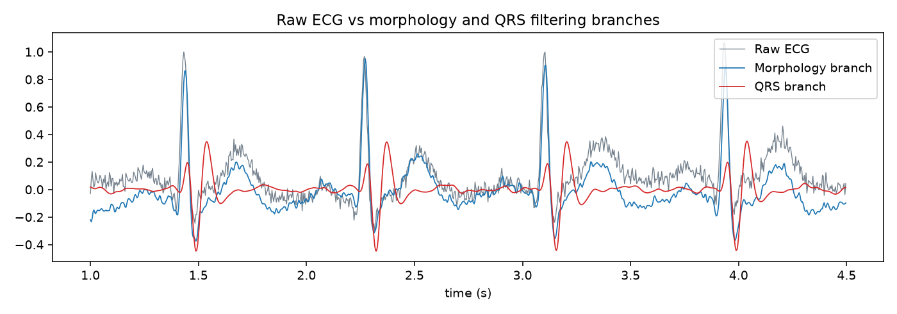
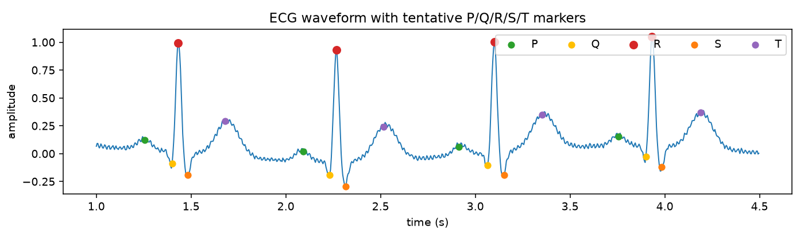
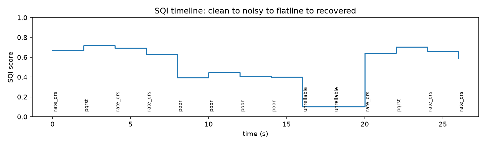
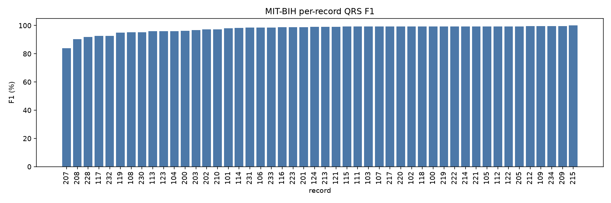
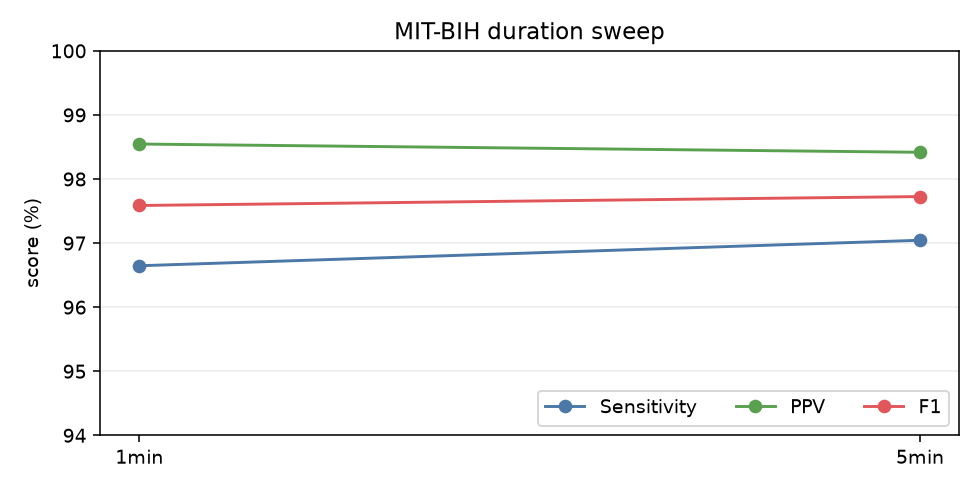
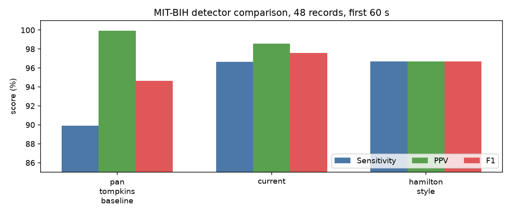
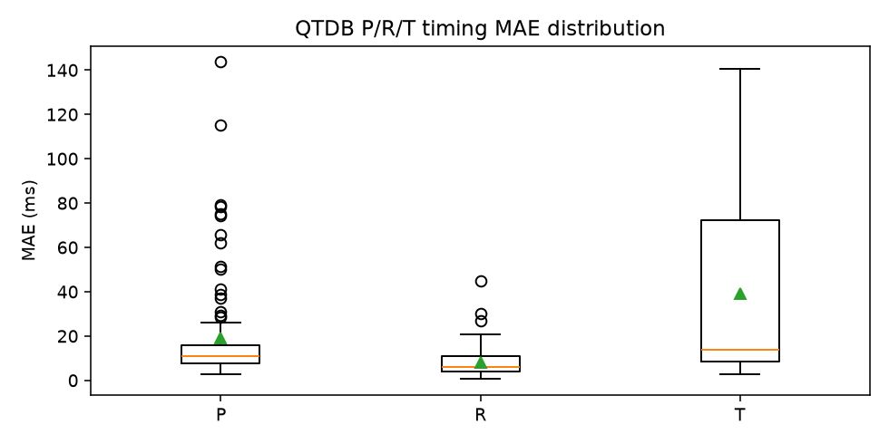
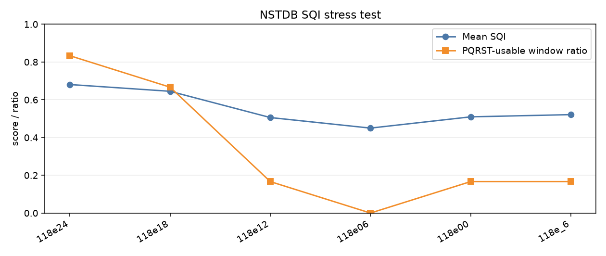
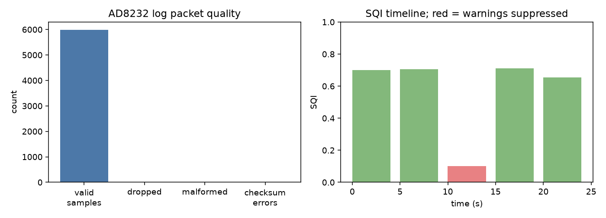
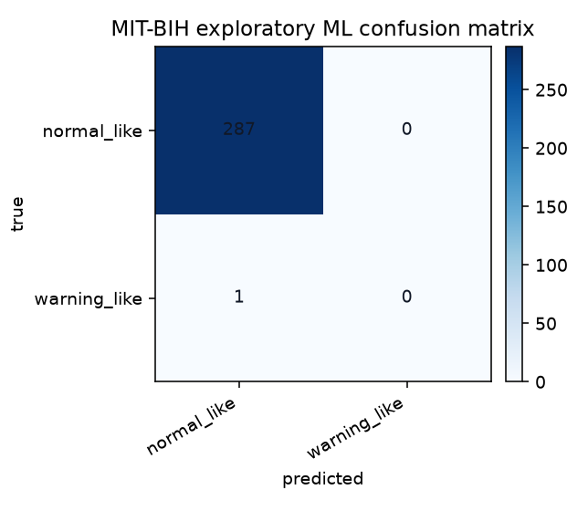

| Records | TP | FP | FN | Sensitivity | PPV | F1 | FP/min |
|---|---|---|---|---|---|---|---|
| 48 | 3660 | 54 | 127 | 96.65% | 98.55% | 97.59% | 1.125 |
| Record | FP | FN | PPV | F1 |
|---|---|---|---|---|
| 208 | 8 | 13 | 92.45% | 90.32% |
| 117 | 7 | 1 | 87.72% | 92.59% |
| 232 | 7 | 2 | 89.06% | 92.68% |
| 207 | 7 | 22 | 91.46% | 83.80% |
| 113 | 4 | 1 | 93.55% | 95.87% |
| 123 | 3 | 1 | 94.23% | 96.08% |
| 104 | 3 | 3 | 96.10% | 96.10% |
| 202 | 2 | 1 | 96.36% | 97.25% |
| Duration | Records | Sensitivity | PPV | F1 | FP/min |
|---|---|---|---|---|---|
| 1min | 48 | 96.65% | 98.55% | 97.59% | 1.125 |
| 5min | 48 | 97.04% | 98.42% | 97.73% | 1.221 |
| Detector | Sensitivity | PPV | F1 | Runtime ms/min ECG |
|---|---|---|---|---|
| pan_tompkins_baseline | 89.91% | 99.91% | 94.65% | 17.73 |
| current | 96.65% | 98.55% | 97.59% | 4.95 |
| hamilton_style | 96.70% | 96.67% | 96.69% | 4.16 |
| Marker | Mean MAE ms | Coverage | Records |
|---|---|---|---|
| p | 19.09 | 91.17% | 97 |
| r | 8.28 | 99.94% | 105 |
| t | 39.18 | 94.58% | 103 |
| q_vs_qrs_onset_approx | 26.80 | 99.94% | 105 |
| s_vs_qrs_offset_approx | 24.65 | 99.92% | 105 |
| Record | SNR | Mean SQI | Suppressed Windows | QRS Count |
|---|---|---|---|---|
| 118e24 | 24 | 0.681 | 0 | 75 |
| 118e18 | 18 | 0.645 | 0 | 78 |
| 118e12 | 12 | 0.506 | 0 | 83 |
| 118e06 | 6 | 0.450 | 0 | 95 |
| 118e00 | 0 | 0.510 | 0 | 94 |
| 118e_6 | -6 | 0.521 | 0 | 84 |
| Source | Scenarios | Overall Pass | HR Pass | Warning Pass | Marker Completeness |
|---|---|---|---|---|---|
| synthetic | 7 | 100.00% | 100.00% | 100.00% | 99.05% |
| Scenario | Pass | SQI | HR | System Output |
|---|---|---|---|---|
| normal_75 | True | usable_for_pqrst | 74.99999999999999 | Normal rhythm candidate |
| brady_45 | True | usable_for_pqrst | 45.04504504504504 | Low preliminary rhythm warning |
| tachy_125 | True | usable_for_pqrst | 124.99999999999997 | Low preliminary rhythm warning |
| irregular_rr | True | usable_for_pqrst | 86.14088820826952 | Moderate preliminary rhythm warning |
| wide_qrs | True | usable_for_pqrst | 74.99999999999999 | Low preliminary rhythm warning |
| noisy | True | usable_for_rate_qrs | 74.99999999999999 | Normal rhythm candidate |
| lead_off | True | unreliable | None | Poor signal / unreliable analysis (warnings suppressed by SQI) |
| Metric | Value |
|---|---|
| Duration s | 24.00 |
| Average HR bpm | 64.00 |
| SQI | unreliable (0.10) |
| Packet loss | 0.08% |
| Lead-off events | 1 |
| Warnings suppressed windows | 1 |
| Rhythm output | Poor signal / unreliable analysis (warnings suppressed by SQI) |









